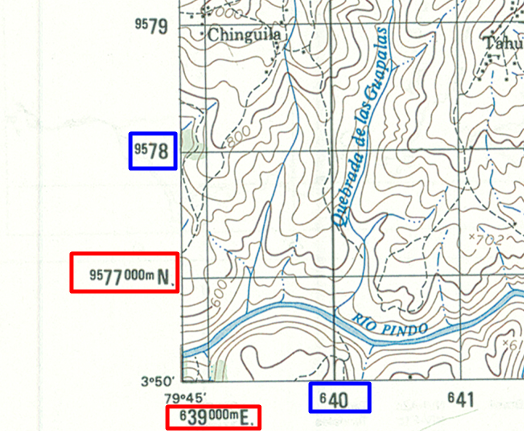
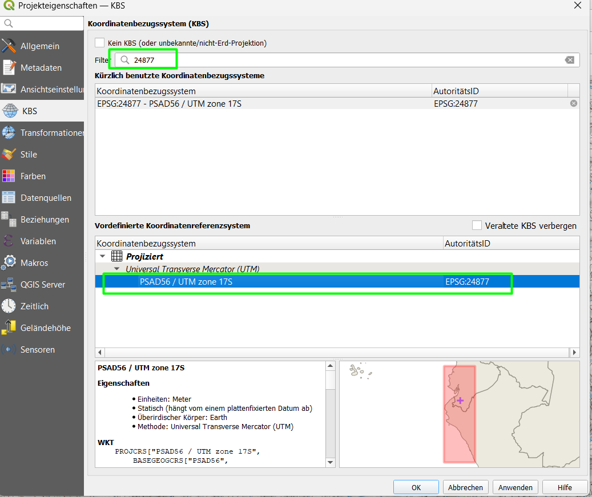
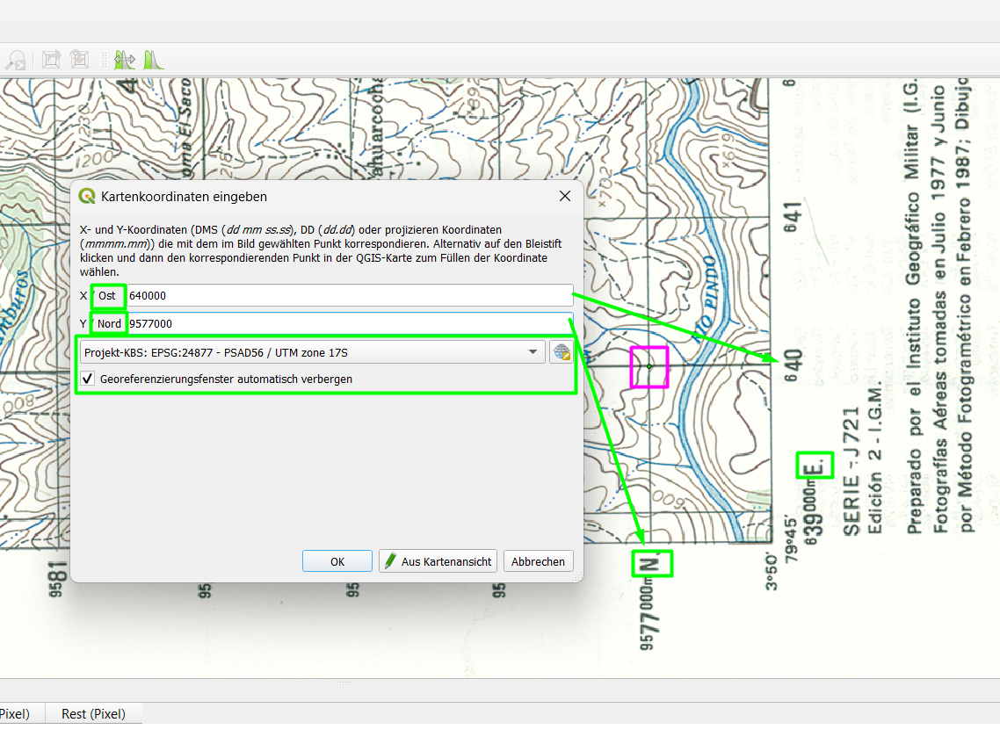
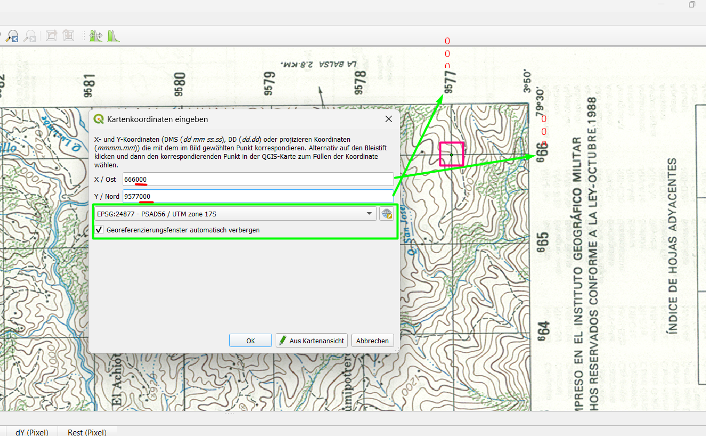
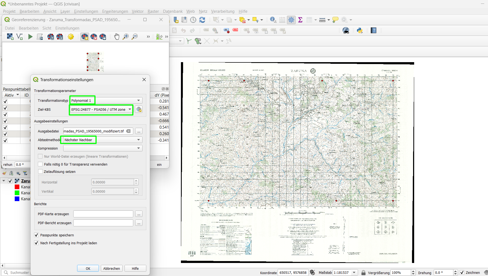
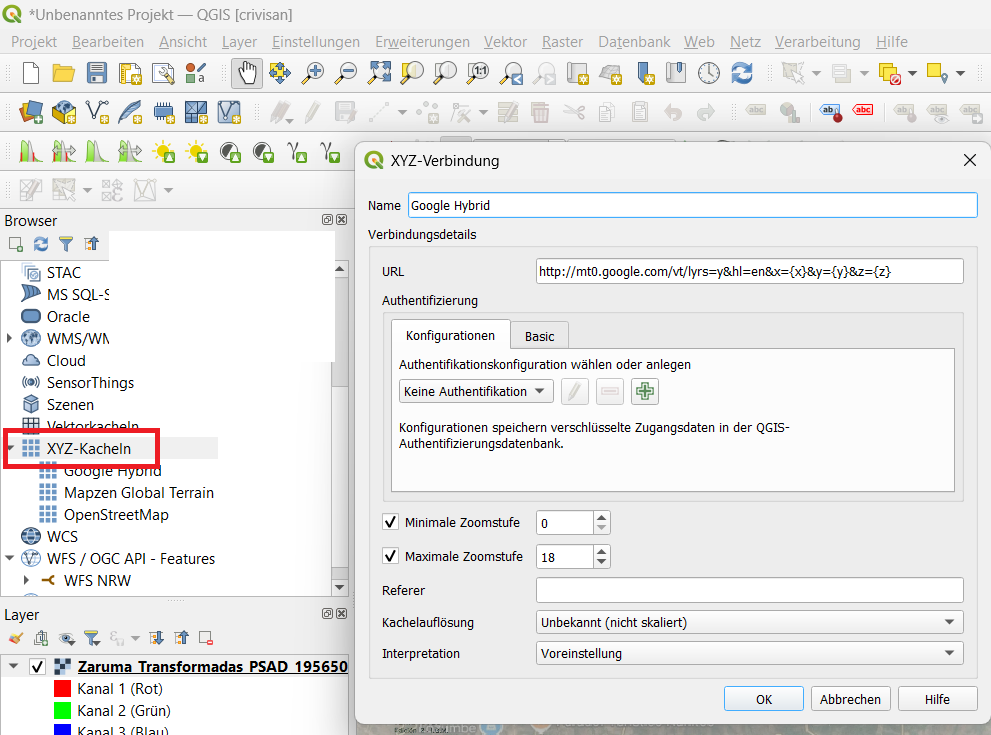
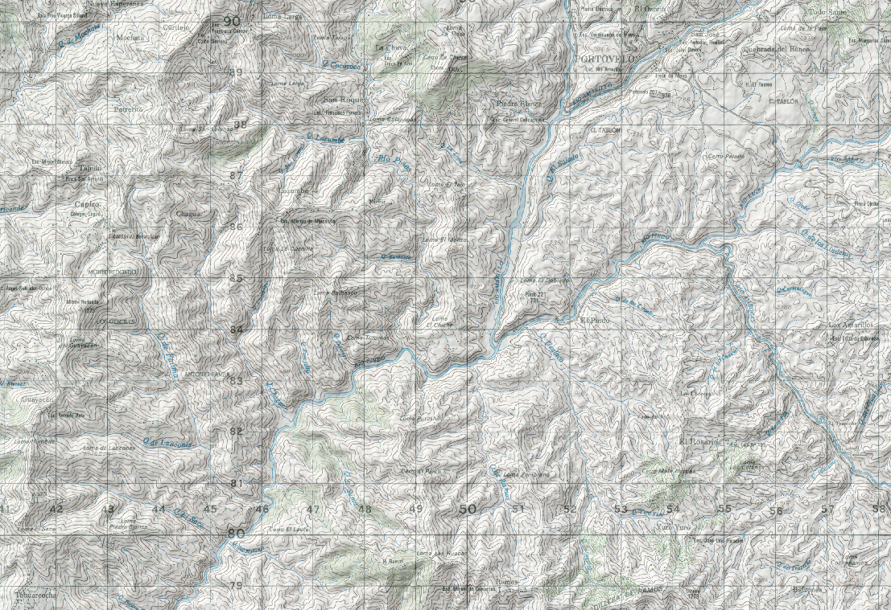

Georeferencing & Layout
Georeferenzierung einer gescannten Karte
Ziel der Aufgabe
In dieser Übung georeferenzieren Sie eine gescannte Karte ohne Hintergrundkarte (WMS).
Stattdessen verwenden Sie: Koordinatengitter + angegebene Koordinaten
Vorbereitung
- Verwenden Sie einen zweiten Monitor
- Öffnen Sie die Bilddatei zusätzlich außerhalb von QGIS
Wichtiger Hinweis zur Karte
Am unteren linken Rand der Karte finden Sie die vollständigen Koordinaten:

Beispiel:
- 9577000 m N
- 639000 m E
❗❗❗ Besonderheit des Gitters❗❗❗
Die restlichen Koordinaten im Raster sind gekürzt dargestellt:
- Beispiel:
640bedeutet → 640000 m E - Beispiel:
9578bedeutet → 9578000 m N
Sie müssen also „000“ ergänzen
Warum?
Zur besseren Lesbarkeit und um die Karte nicht zu überladen.
Schritt 1 – QGIS Projekt vorbereiten
- QGIS öffnen
- Neues Projekt erstellen
CRS einstellen
- Menü Projekt → Eigenschaften
- Reiter KBS
- Suche:
24877
Wählen Sie:
PSAD56 / UTM Zone 17S

Schritt 2 – Georeferenzierer öffnen
- Menü Layer → Georeferenzierung
Schritt 3 – Bild laden
- Datei → Raster öffnen
- Ihre Karte auswählen (
Zaruma_Transformadas_PSAD_19565000.jpg)
Hinweis zur Darstellung
Das Bild wird zunächst:
- gedreht / verschoben erscheinen
Deshalb: Bild parallel außerhalb von QGIS geöffnet lassen
Schritt 4 – GCP Punkte setzen
Jetzt beginnt der wichtigste Teil.
Wir verwenden: Gitterkreuzungen + Koordinaten
Vorgehen
- Klicken Sie auf eine Gitterkreuzung
- Geben Sie die Koordinaten manuell ein
Beispiel
Punkt:
- X (Easting):
640000 - Y (Northing):
9577000

❗❗❗ Wichtige Hinweise ❗❗❗
- X = Easting (Ost) → kleinere Werte (~600000)
- Y = Northing (Nord) → größere Werte (~9.5 Mio)
Merksatz: X = tausend / Y = million
Aufgabe
- Setzen Sie mindestens 6–8 GCP Punkte
- Verteilen Sie die Punkte über die gesamte Karte

Schritt 5 – Transformation einstellen
- Klicken Sie auf das Zahnrad-Symbol
Einstellungen
- Transformation: Polynomial 1
- Ziel-KBS: PSAD56 / UTM Zone 17S (EPSG:24877)
- Ausgabe:
.tifDatei auswählen
Rest kann unverändert bleiben.
Schritt 6 – Georeferenzierung starten
- Klicken Sie auf das Play-Symbol

Ergebnis
- Das Bild erscheint korrekt ausgerichtet im Projekt
- Die Karte ist nun georeferenziert
Zusatz – Hintergrundkarte hinzufügen
Google Hybrid
- Browser → XYZ-Kacheln → Rechtsklick → Neue Verbindung
Name:
Google Hybrid
URL:
http://mt0.google.com/vt/lyrs=y&hl=en&x={x}&y={y}&z={z}

Layer hinzufügen
- XYZ-Kacheln → Google Hybrid Rechtsklick → Zum Projekt hinzufügen
- Unter den Georeferenz-Layer legen
Extra – 3D-Effekt (Topographie)
Transparenz einstellen
- Rechtsklick auf Georeferenz-Layer
- Eigenschaften → Transparenz
- ~60 %
Mapzen Terrain
- XYZ-Kacheln → Mapzen Global Terrain Rechtsklick → Zum Projekt hinzufügen
- Unter den Georeferenz-Layer legen
Schummerung aktivieren
- Mapzen Global Terrain Rechtsklick → Eigenschaften
- Symbolisierung
- Darstellungsart: Schummerung

Aufgabe
- Prüfen Sie:
- Stimmen Flüsse überein?
- Stimmen Höhenlinien grob?
Ergebnis
- Höhenmodell sichtbar
- Flüsse & Höhenlinien passen zusammen
Sie haben jetzt eine 2D-Karte mit 3D-Wirkung kombiniert
Reflexion
- Wie genau ist Ihre Georeferenzierung?
- Welche Punkte waren schwierig?
- Warum ist die Verteilung der GCPs wichtig?